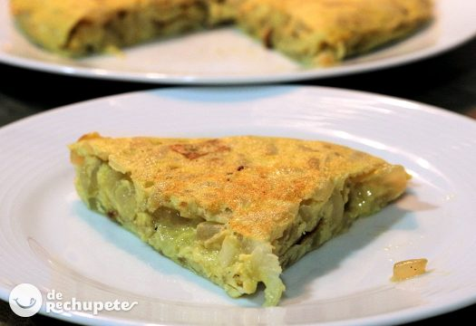

Tortilla de cebolla
Receta de tortilla de cebolla casera.

Ingredientes
- 2 cebollas grandes.
- 4 huevos medianos camperos.
- Sal y pimienta negra recién molida (al gusto)
- Aceite de oliva virgen extra (20 ml. para pochar la cebolla y 10 ml. para dorar la tortilla)
- Opciónal: Perejil o cilantro fresco
Elaboración (Pasos)
- Calentar aceite en una sartén.
- Añadir las patatas cortadas, la sal y la pimienta.
- Freír al gusto.
- Servir en plato.
Volver atras